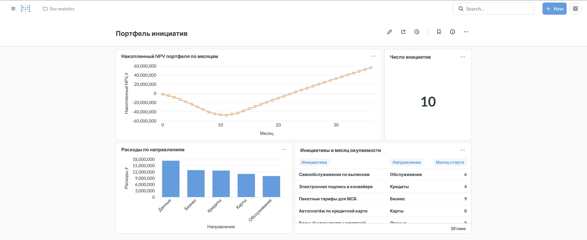

Разница с предыдущим кейсом принципиальная. Там ответом была картинка в тетради, которая живёт до закрытия файла. Здесь агент создаёт постоянные объекты в системе дашбордов — со ссылкой для команды.
Управленческий вопрос. Как сделать так, чтобы ответ про портфель не приходилось запрашивать каждый раз заново?
Стенд поднят и проверен: ./run.sh up, затем
python3 tools/check_env.py — последняя строка должна быть
«всё на месте». Порядок установки с нуля —
в документе установки, для JupyterHub банка —
в отдельной инструкции.
Агент здесь устроен ровно так же, как в предыдущем кейсе: тот же цикл «модель → инструмент → результат → модель». Изменился только набор инструментов — вместо запроса и графика ему дали API системы дашбордов.
Карточка — это запрос плюс выбранный тип отображения; дашборд — раскладка карточек. Устройство системы дашбордов разобрано в кейсе конвейера, там же панель собирается руками. Стоит пройти оба пути подряд: тогда видно, что именно агент делает за вас, и где он может ошибиться.
2.8_кейс_дашборд_агентом/2.8.1_дашборд_агентом.ipynb. Подключение — одна строка: from tools.dashboard_agent import собрать_дашборд. Система дашбордов должна быть поднята: ./run.sh status показывает healthy.
Дашборд описывается одним абзацем — какие показатели нужны и в каком виде: кривая накопленного NPV портфеля по месяцам линией, расходы по направлениям столбцами, число инициатив числом, таблица инициатив с месяцем окупаемости. Ни SQL, ни щелчков в интерфейсе.

Пять проверок: каждая карточка показывает данные, а не ошибку; у графика подписаны оси; числа совпадают с тетрадью отчёта; названия понятны тем, кто не присутствовал при сборке; относительный месяц не спутан с абсолютным.
Что-то не так — правится прямо в интерфейсе: карточка открывается, запрос виден целиком, тип отображения меняется в два клика. Это важное свойство: результат работы агента остаётся обычным объектом системы, а не чёрным ящиком.
На дашборде выше в таблице инициатив стоит колонка «Месяц старта» — хотя просили месяц окупаемости. Карточка выглядит правдоподобно, числа настоящие, вопрос — другой. Это самая частая ошибка: агент берёт похожее поле. Ловится сравнением с тетрадью за десять секунд.
Практический вывод: агент экономит не понимание, а щелчки. Решение о том, тот ли это показатель, остаётся за вами — и занимает те же десять секунд, что и раньше.
Соберите дашборд по своему показателю — тому, за которым вы и так следите руками. Порядок тот же: описать словами, что должно быть на панели, принять результат по пяти проверкам, поправить руками то, что агент понял не так.
Если своей базы под рукой нет — соберите второй дашборд на данных кейса: например, по кредитному конвейеру, где карточки строятся из представлений чистого слоя.
И чтение к следующей встрече — «Связь и причинность: корреляция и регрессия»: что показывает коэффициент связи, что показывает прямая и какие вопросы задать, прежде чем принять вывод об отклонении.
Публичный ассистент видит всё, что вы ему отправили. Данные, которые нельзя выносить из контура банка — клиентские, персональные, внутренние выгрузки, — обрабатываются ассистентом в закрытом контуре банка, а не публичным. Правило простое: если выгрузку нельзя приложить к письму наружу, её нельзя вставить и в публичный чат с моделью.
Промежуточный случай решается приёмом: сам скрипт можно получить и на обезличенном фрагменте — двадцать строк с теми же заголовками и типами данных, — а запускать его уже на полной таблице у себя. Модель пишет код по описанию структуры, сами данные ей для этого не нужны.
Модель портфеля и кривые NPV — в справочнике метрик; проверка чисел запросами — в памятке SQL ↔ pandas.